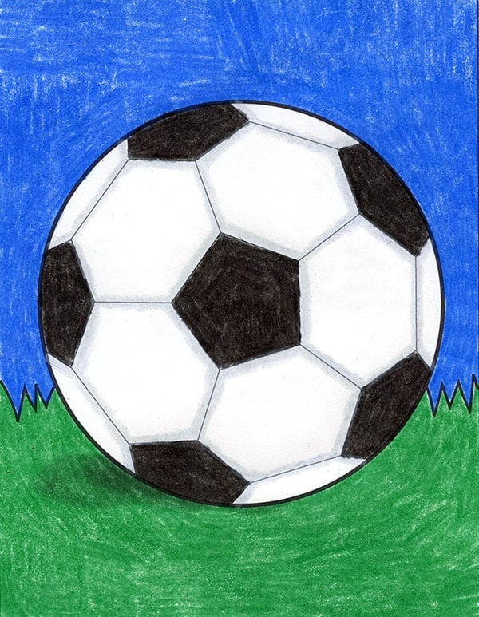
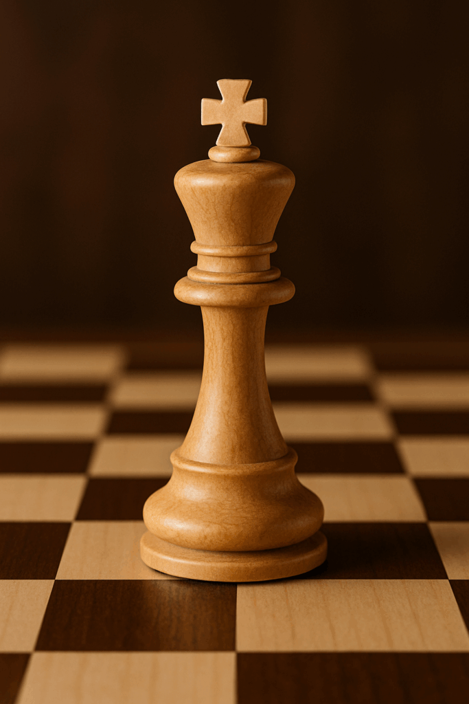
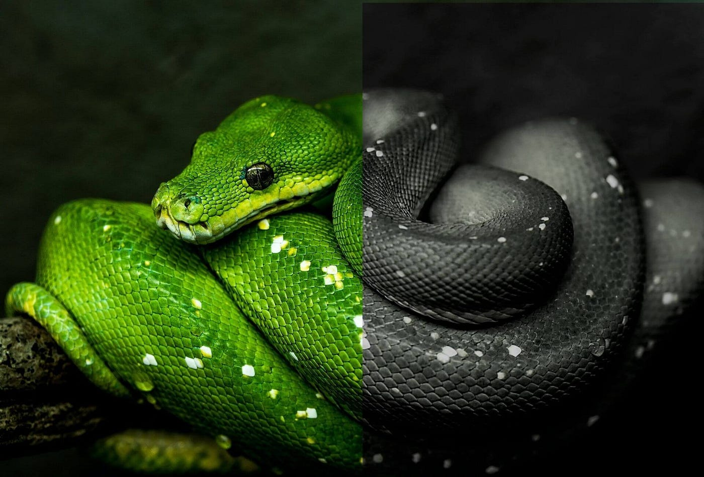
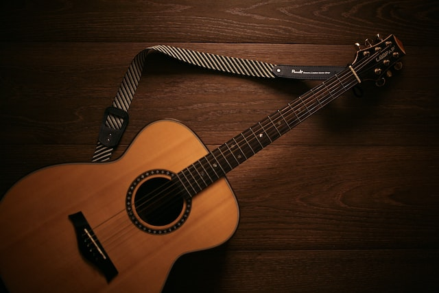

Hobbies:

Soccer
Ever since I was 5, I started playing soccer. I continued playing until my sophomore year. However, throughout my years playing soccer, I was on countless teams. I started playing off in recreational league for the majority of my soccer years. I actually accomplished much during my recreational league tournaments because we ended up winning 5 season tournament championships in a row. After those 5 wins, I switched to club soccer at San Diego Soccer Club (which later turned into San Diego Soccer Club Surf). I started on the lowest team, and then moved to the C team. While on the C-team, I was able to win a tournament in Irvine. I played 1 more year after the C-team but then quit club. I then tried out soccer in high school by participating on the freshmen team for soccer and made the team. We didn't win anything. I tried out my sophomore year as well for high school but got cut before I made it.

Chess
I never really paid attention to playing chess. I've always known how to play but I would typically just be very casual. Probably around 400 ELO when I first started. However, during my sophomore year of high school, one of my friends introduced me to Chess.com where I found the game a lot of fun. Then in my junior year of high school, I ended up hitting my highest ELO of 1520. I joined a chess club that same year and as a team we ended up going to some competitions. We went against various schools and our best performance ended in 4th place. Although we did not win, I was able to win various chess games with others helping my teammates and my team. Now, as a senior, I do not play chess as much and it shows. I have tried getting back into the game but I, unfortunately, am not as good as I used to be.

Python
I started learning python at a young age with my dad. My passion for python turned into a hobby. I inevitably bought a book to further my advancement in python coding and my biggest achievement was creating my own version of Monopoly using python code. It took me a long time but it was definitely worth it. The syntax errors were brutal but I kept pushing through and finished the game.

Java
After python, I started learning how to code in Java through my Robotics Club (E-Motion). They made me use a website called CodeAcademy.org and through that website I was able to learn the majority of the basics of Java. Even after Robotics had finished and it was summer, I continued coding through that website. Although I don't use that website anymore, I continue to pursue coding in Java through the classes I take (i.e. AP Computer Science A which deals with Java).

Volunteer
I have done quite a bit of volunteer work. It all started when I was getting confirmed at my Catholic Church and we were required to do 20 hours of volunteer work wherever we could. I would participate as a lector and would stick around after Mass in order to help more with putting away equipment. After I was confirmed, over the summer of junior year, I decided to give back to the community by offering math-tutoring sessions for free in order for kids to advance or catch up to their classes. It was successful and I ended up helping them learn a variety of topics since the classes they had varied. I had students from 6th grade all the way to 12th.

Guitar
I have played the guitar for a while, actually. I started playing when I was in 5th grade back at my old elementary school. I played because the school itself would bring a guitar teacher every Thursday after school. Once I moved to middle school, however, we contracted a guitar teacher to come to the house so I could continue practicing. However, he ended up having to move away because his wife found a new job. So I went with another teacher. We would practice for about 2 and a half years and would show up to the concerts where we would play guitar in front of a large audience. After those 2 and a half years, I decided to switch to another teacher because the former teacher was teaching me a lot of contemporary music but I wanted more classical guitar songs. This new teacher, at the time, was able to give me a lot of music that was to be performed classicaly. Ever since, I've been with this teacher. He has shown me a lot of songs that are beautiful. Every time I want to perform a song on the guitar that is a modern-song, he is able to just listen to the song and know which chords to play in order to mimic the song.